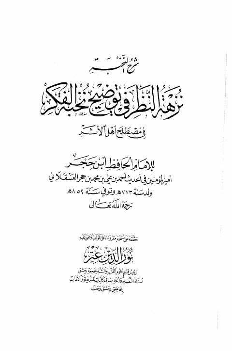

Downloads need an internet connection.
نزهة النظر في توضيح نخبة الفكر في مصطلح أهل الأثر
Authors: أحمد بن علي بن حجر العسقلاني
Editors: نور الدين عتر
Publishers: مطبعة الصباح
**▫️ العنوان: نزهة النظر في توضيح نخبة الفكر في مصطلح أهل الأثر** ▪️ المؤلف: #أحمد_بن_علي_بن_حجر_العسقلاني ▫️ المحقق: #نور_الدين_عتر ▪️ الناشر: #مطبعة_الصباح ▫️ تاريخ النشر: 1421هـ 2000م ▪️ بلد النشر: دمشق، #سورية ▫️ الطبعة: 3 ▪️ عدد الأجزاء: 1 ▫️ الصفحات: 175 ▪️ نوع الوعاء: #كتاب ▫️ التصنيف الرئيسي: #الحديث_وعلومه ▪️ التصنيف الفرعي: #مصطلح_الحديث ۪